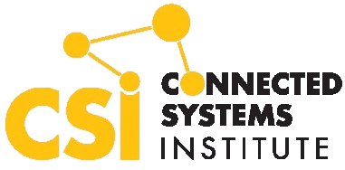
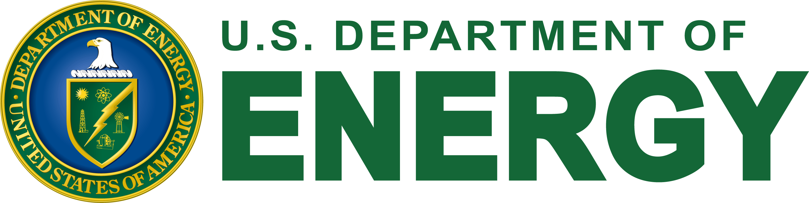

Mechanical Engineering Ph.D. candidate and Fulbright Scholar with experience in industrial AI, predictive maintenance, and energy efficiency. Combines machine learning development with on-site engineering assessments and a multidisciplinary background in mechanical and energy systems.
Professional experience

AI Research Assistant
Connected Systems Institute
June 2025 – PresentMilwaukee, WI · Internship
- Conduct industrial on-site audits to collect manufacturing data for Microsoft’s Co-Innovation Lab at UW–Milwaukee.
- Assess AI readiness and develop AI pilot programs and digitalization roadmaps for manufacturers.

Energy Engineer
Industrial Assessment Center · UW–Milwaukee
August 2024 – PresentMilwaukee, WI
- Analyze facility operations, utility consumption, and energy system performance to recommend efficiency improvements.
- Participated in 9 assessments and led 2 independently. Reported assessment results include $467,875 in cost savings and 1.57 GWh in energy reduction.
- Evaluate power factor, load imbalance, and demand-driven disturbances; recommend correction, load balancing, and strategic scheduling.
Energy Engineering Intern
Leidos
May – August 2023Illinois, United States
- Completed 45 compliance reviews and updates to the Illinois Statewide Technical Reference Manual.
- Processed 72 energy efficiency applications for Ameren’s program, with a reported 30% reduction in processing time.
- Used Tesseract OCR and OpenCV to extract utility-bill data; managed Salesforce reports for weekly budgeting.
Read my Leidos intern spotlight ↗
NDT Laboratory Operator Intern
ERMAero · Algiers, Algeria
November – December 2021
- Performed ultrasonic and radiographic tests on aircraft parts to identify defects and assess compliance with industry standards.
Process Control & Automation Intern
Sonatrach · Illizi, Algeria
December 2019 – January 2020
- Supported automated gas turbine control systems, troubleshooting, and maintenance scheduling using a computerized maintenance management system.
Education
Ph.D., Mechanical Engineering — Candidate
University of Wisconsin–Milwaukee · Expected May 2027
M.S., Energy Engineering
Arizona State University · May 2024 · GPA 4.0
M.S., Electromechanical Engineering
University of Science and Technology Houari Boumediene · 2019–2021
B.S., Mechanical Engineering
University of Science and Technology Houari Boumediene · 2016–2019
Technical skills
- Programming & data
- Python, MATLAB, SQL, JavaScript, Pandas, NumPy, SciPy, Matplotlib, Excel, JMP
- Machine learning
- TensorFlow, Keras, PyTorch, Scikit-learn, XGBoost
- Signal & image processing
- OpenCV, Tesseract OCR, PyWavelets
- Engineering & simulation
- SolidWorks, AutoCAD, Ansys, EnergyPlus, eQuest, MEASUR
Selected research & projects
Developed MLP and 1D CNN classifiers using vibration data, MODWPT, and entropy features. Reported 99.3% CNN accuracy in the project evaluation.
Implemented genetic stacked autoencoder wind forecasting in MATLAB for a three-stage Stackelberg microgrid management framework.
Redesigned photovoltaic components in SolidWorks and evaluated structural performance, repairability, and project economics.
Recognition & leadership
Fulbright Student Scholarship
U.S. Department of State · 2021–2024
Robotics Teacher · Ecole Opiniâtre
Taught high school students robotics and programming · December 2020 – October 2021
English Club · Vice President & team leader
University of Science and Technology Houari Boumediene · 2017–2021
Languages: English (native proficiency), French (advanced), Arabic (advanced), Turkish (beginner).